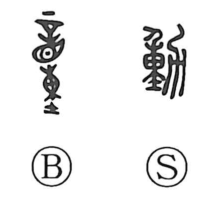

Explanation
A phono-semantic graph. In early bronze forms, 童 served as the phonetic element (giving the on reading dō) and was even used to write this word itself. Later, the component 力—understood by Shirakawa as the form of a suki, a plow—was added, bringing in the concrete image of agricultural labor. From this scene the senses broadened to “move the body,” “to move, budge,” and by extension “to act, to do.” The graph 童 originally depicted a person with tattoo marks over the eyes, denoting a prisoner or slave, which here functions purely as the sound element. In the present form the upper part is written like 重, but the word’s core imagery comes from 童 as phonetic combined with 力 as the laboring implement; for the specialized sense of “to work,” Japanese later created 働.